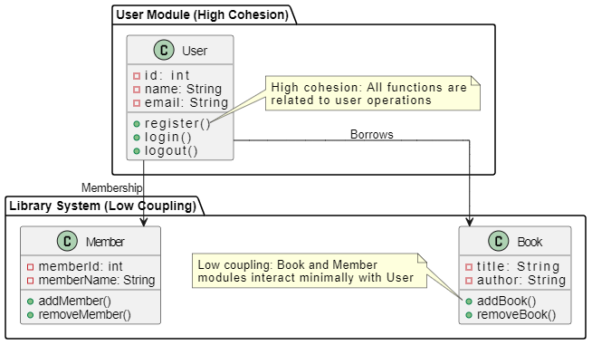

5.11 Cohesion vs Coupling (comparison)
Coupling and cohesion are often confused in exams because both measure design quality, but they apply at different scopes. This page provides a direct comparison — a high-yield topic for MCQs and short-answer questions (see coverage map revision checklist #6).
Core distinction
- Cohesion is an intra-module (within-module) concept — it measures how closely related the elements inside one module are.
- Coupling is an inter-module (between-module) concept — it measures how dependent different modules are on each other.
- The goals are opposite in direction: you want high cohesion and low coupling.
Comparison table
| Aspect | Cohesion | Coupling |
|---|---|---|
| Scope | Intra-module — within a single module. | Inter-module — between different modules. |
| Measures | Functional strength of elements within a module. | Degree of interdependence between modules. |
| Relationship type | Relationship within a module — how well elements work together. | Relationship between modules — how much modules rely on each other. |
| Represents | Functional strength of a module. | Independence among modules. |
| Desired level | High cohesion — module focuses on a single, well-defined task. | Low coupling — modules are as independent as possible. |
| Best type | Functional cohesion (all functions cooperate for one task). | Data coupling (modules pass only simple data values). |
| Worst type | Coincidental cohesion (unrelated functions grouped randomly). | Content coupling (one module modifies another's internals). |
| Created between | Elements of the same module. | Two different modules. |
| Focus | Module focuses on a single thing. | Modules are connected to other modules. |
| Impact of poor quality | Low cohesion: module does too many unrelated things — hard to understand and reuse. | High coupling: change in one module breaks others — hard to maintain and test. |
| Ideal for good software | Highly cohesive modules give the best software. | Loosely coupled modules give the best software. |
Key exam differences (MCQ-ready)
- Cohesion = inside a module; coupling = between modules.
- High cohesion is good; high coupling is bad.
- Cohesion measures strength; coupling measures dependence.
- Functional cohesion is best; data coupling is best — both represent the ideal design goal.
- Coincidental cohesion is worst; content coupling is worst.
Why both matter together
- A module can be highly cohesive internally but still tightly coupled to other modules — both metrics must be evaluated.
- High coupling and low cohesion together make a system difficult to change and test.
- Low coupling and high cohesion together make a system easier to maintain, improve, and scale.
- These principles apply at every design level — from individual functions up to architectural components.
Example — high cohesion and low coupling (library system)
The diagram below shows a library system design that demonstrates high cohesion within the User module and low coupling between the Book, Member, and User modules.

High cohesion — User module
The User module is designed to handle all user-related functionalities:
- Attributes:
id,name, andemail. - Functions:
register(),login(), andlogout(). - Why high cohesion? All functions in the User module are related to managing users. Everything in this module is focused on one specific task — handling user operations.
Low coupling — Book and Member modules
The library system consists of two separate modules: Book and Member.
- Book module: Attributes include
titleandauthor; functions includeaddBook()andremoveBook(). - Member module: Attributes include
memberIdandmemberName; functions includeaddMember()andremoveMember(). - Why low coupling? The Book and Member modules operate independently. They have their own specific functions and attributes and do not need to know the internal workings of each other.
- Minimal interaction: The User module interacts with Book and Member only through simple actions such as borrowing a book or managing memberships, but the modules do not rely on each other for their main tasks.
Q: Differentiate between cohesion and coupling. Why are their desired levels opposite?
Model answer points:
- Cohesion = intra-module strength (want high); coupling = inter-module dependence (want low).
- Cohesion: elements within same module; coupling: between two different modules.
- Best cohesion = functional; best coupling = data.
- Opposite goals because strong internal focus + minimal external dependency = maintainable design.
- Draw or complete comparison table with at least 5 rows.